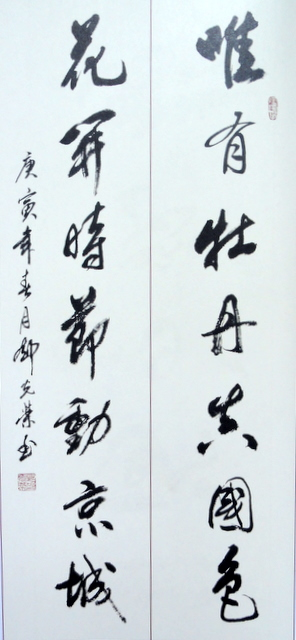
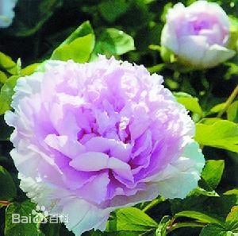

| 洛阳 luoyang | |||||||||||||||||||
洛阳牡丹 |
|||||||||||||||||||
| 洛阳牡丹，“唯有牡丹真国色，花开时节动京城”，为多年生落叶小灌木。洛阳是十三朝古都，有“千年帝都，牡丹花城”的美誉。“洛阳地脉花最宜，牡丹尤为天下奇。”其栽培始于隋，鼎盛于唐，宋时甲于天下。它雍容华贵、国色天香、富丽堂皇，寓意吉祥富贵、繁荣昌盛，是华夏民族兴旺发达、美好幸福的象征。洛阳牡丹花朵硕大，品种繁多，花色奇绝，有红、白、粉、黄、紫、蓝、绿、黑及复色9大色系、10种花型、1000多个品种。花开时节，洛阳城花海人潮，竞睹牡丹倩姿芳容。 | |||||||||||||||||||
|  | 《赏牡丹》是唐代文学家刘禹锡所作的七绝，是一首托物咏怀之作。此诗描绘了唐朝惯有的观赏牡丹的习俗，以芍药“妖无格”的和芙蕖“净少情”衬托牡丹之高标格和富于情韵之美，其中也蕴含了诗人心中的理想人格精神。全诗用对比和抑彼扬此的艺术手法，肯定了牡丹“真国色”的花界地位，真实地写出了当年牡丹花盛开能引起京城轰动的巨大效应。 | ||||||||||||||||||
| 栽培历史 | |||||||||||||||||||
隋581-618洛阳 唐618-907长安 五代907-960洛阳 北宋960-1127洛阳 南宋1127-1279天彭 明1368-1644亳州 清1644-1911曹州 |
|||||||||||||||||||
|  | |||||||||||||||||||